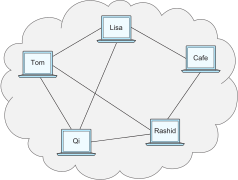
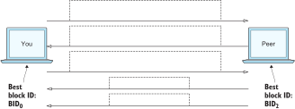

8. Peer-to-peer network
This chapter covers
-
Removing the last central authority: the shared folder
-
Following a transaction in the peer-to-peer network
-
Leaving behind the silly cookie tokens
-
Bootstrapping the peer-to-peer network
Let’s talk about the elephant in the room: the shared folder. All blocks the miners produce must pass through the shared folder on their way to other full nodes and miners. This chapter will remove the central shared folder and replace it with a decentralized peer-to-peer network (Figure 1). The peer-to-peer network lets full nodes (including miners) send blocks directly to each other. When nodes can talk directly to each other, we no longer need a central point of authority for communication.
Another issue we haven’t talked much about is how wallets send transactions via email to the miners. When a new miner joins the system, all wallets need to update their miner list. Not cool. With this nice peer-to-peer network of nodes, wallets can broadcast their transactions to all miners without knowing who or where they are.

We’ll follow a transaction’s path through the network, both as an unconfirmed transaction and, eventually, as part of a mined block. The transaction will start in John’s wallet and end as a confirmed transaction in the blockchain with Bob’s wallet being notified about it.
After following the transaction through the system, you’ll no longer need the cookie token system to help you understand Bitcoin. We’ll talk only about Bitcoin from that point forward. Practically no differences exist between the cookie token system and Bitcoin anymore, so it doesn’t make sense to keep talking about cookie tokens when, in fact, you want to learn about Bitcoin!
The last topic in this chapter will cover how a new node connects to and becomes part of the peer-to-peer network. This is far from trivial. How does it find nodes to connect to? How does it download the blockchain up to the latest block? We’ll sort all that out. Toward the end of the chapter, you’ll learn how to set up a full node of your own.
8.1. The shared folder
The shared folder administrator, Luke, is a central authority (Figure 2). He ultimately gets to decide which blocks can be stored in the shared folder. He also gets to decide who can read from and write to the shared folder.
So far, we’ve assumed Luke is a totally neutral good guy—but what if he isn’t, or what if he’s forced by Acme Insurances to reject certain blocks? What’s the point of proof of work if the system can be censored at the block level? Proof of work made the transactions censorship-resistant because it let users send their transactions to multiple miners. But the blocks containing the transactions can still be censored by whoever has administrator privileges over the shared folder. Simply put, the system isn’t yet censorship-resistant. As long as a single entity can decide which blocks or transactions to allow, the system isn’t censorship-resistant.
The shared folder poses yet another problem. Imagine that Rashid has created a 1 MB block and published it to the shared folder. Everyone watching the shared folder, all full nodes, will download Rashid’s block at the same time. If you have 100 full nodes, the total amount of data you need to send from the shared folder to the different nodes is 100 MB. This will cause block propagation—the transfer of a block from its creator to all other nodes—to be terribly slow. The more nodes, the slower the block propagation.
8.2. Let’s build a peer-to-peer network
What if the full nodes and miners could talk directly to each other instead of relying on the central shared folder? They could send the blocks directly to one another in a peer-to-peer network (Figure 3).

Think of the peer-to-peer network as a large number of people. One person doesn’t know everyone else, but might know three people. When something interesting happens—for example, Rashid finds a block—he tells his three friends about it, who in turn tell all their friends, and so on until everybody knows about this new block. We call such networks gossip networks for apparent reasons.
Blocks can no longer be easily stopped. A node can choose not to pass a block on, or relay it, to its peers, but the peers are connected to several other peers that will gladly relay the block to them. A single node can’t do much to censor information.
Suppose Rashid finds a block, and he wants to get this block out to all nodes. Rashid sends his block to Qi, Tom, and the cafe. For some reason, the cafe doesn’t forward the block to Lisa (Figure 4). But Lisa has several peers in this network. She’s connected to Tom and Qi. Tom will tell Lisa about this new block and send it to her. The cafe can’t hide information from Lisa as long as she’s well-connected—that is, has many different peers.

Now that you have this nice network, wallets can use it to get their transactions sent to miners. Then they won’t have to keep track of miner email addresses anymore. The transactions will be broadcast over the peer-to-peer network and reach all full nodes within seconds. This includes the miners, because they’re also full nodes. We covered this briefly in [ch01], as repeated in Figure 5.
The same thing goes here as for blocks: a single node can’t hinder transactions from spreading across the network. Another pleasant effect of using the peer-to-peer network for transactions is that a transaction’s recipient can be notified that the transaction is pending, or is about to be confirmed. We’ll look at how this works a bit later.
8.3. How do peers talk?
Let’s look at how the communication between two peers happens. We’ll look specifically at how Tom connects to Lisa and how they communicate across their communication channel, called a Transmission Control Protocol (TCP) connection (Figure 6).

Suppose Tom’s node knows about Lisa’s node. I’ll explain in Section 8.7 how Tom learns about other nodes. For now, let’s assume he has the IP address and port of Lisa’s node. He now wants to connect to Lisa’s node to communicate with it. All computers on the internet have an Internet Protocol (IP) address, which is how one computer can send information to another. A computer program that listens for incoming connections must listen on a specific port number of its computer’s IP address. Lisa’s computer has the IP address 142.12.233.96 and runs a cookie token program that listens for incoming connections on port 8333.
Tom’s node connects to Lisa’s node through the IP address 142.12.233.96 and TCP port 8333. His node (computer program) starts by asking its operating system (OS) to initiate a connection to Lisa (Figure 7). The OS sends a message to Lisa’s computer saying that Tom wants to talk to a computer program on Lisa’s port 8333. Her computer knows a program is listening on port 8333, so it sends back a “Sure, welcome” message. Tom’s computer acknowledges this by sending back an “OK, cool. Let’s talk …” message.

The node software on Tom’s and Lisa’s computers wasn’t involved in this exchange—it was carried out by their OSs, such as Linux, Windows, or macOS. When the message sequence is finished, the OS hands the connection over to the node software. Lisa’s and Tom’s nodes can now speak freely to each other. Tom can send data to Lisa, and Lisa can send data to Tom over this communication channel, or TCP connection.
8.4. The network protocol
Tom and Lisa can now send and receive data over a communication channel. But if Tom’s node speaks a language that Lisa’s node doesn’t understand, the communication won’t be meaningful (Figure 8). The nodes must have a common language: a protocol.
The cookie token network protocol defines a set of message types that
are allowed. A typical message in the cookie token (well, Bitcoin)
network is the inv message (Figure 9).

A node uses the inv—short for inventory—message to inform other
nodes about something it has. In Figure 9, Tom’s node informs
Lisa’s node that Tom has three things to offer Lisa: two transactions
and a block. The message contains an ID for each of these items.
8.4.1. John sends the transaction
Let’s follow a transaction through the network from start to end to see what network messages are being used. We’ll assume the peer-to-peer network is already set up. We’ll come back to how the network is bootstrapped later in this chapter.
In [lightweight-wallets], we said that wallets can connect to full nodes and get information about all block headers and transactions concerning them using bloom filters and merkle proofs (Figure 10).
I didn’t go into detail then about how this communication works. It uses the same protocol the nodes use when they communicate with each other. The wallets and the full nodes (including miners) all speak the same “language.”
Suppose John wants to buy a cookie from the cafe. John’s wallet is connected to Tom’s node with a TCP connection. He scans the payment URI from the cafe’s wallet. John’s wallet creates and signs a transaction. You know the drill. Then it’s time to send the transaction to Tom’s node (Figure 11).

This happens in a three-step process. John’s wallet doesn’t just send the transaction unsolicited: it first informs Tom’s node that there’s a transaction to be fetched (Figure 12).
The first message is an inv message, as described in the previous
section. John’s wallet sends the inv to Tom’s full node. Tom checks if
he already has the transaction. He doesn’t, because John’s wallet just
created it and hasn’t sent it to anyone yet. Tom’s node wants to get
this transaction, so he requests it with a getdata message that looks
just like an inv message but with a different meaning: getdata
means “I want this stuff,” whereas inv means “I have this stuff.”
John’s wallet receives the getdata message and sends a tx message
containing the entire transaction to Tom’s node. Tom will verify the
transaction and keep it. He’ll also relay this transaction to his
network neighbors.
You might ask, “Why doesn’t John’s wallet send the entire transaction
immediately? Why go through the hassle with inv and getdata?” This
will become clear later, but it’s because nodes might already have the
transaction; we save bandwidth by sending only transaction hashes
instead of entire transactions.
8.4.2. Tom forwards the transaction
If the transaction is valid, Tom’s node will inform his neighbors about
it (Figure 13) using an inv message, just like John’s wallet did
when it informed Tom’s node about the transaction.
The process is the same for these three message exchanges as the one
John used when he first sent the transaction to Tom (Figure 14). Lisa,
Qi, and Rashid will get an inv message from Tom.


When Lisa, Qi, and Rashid have received the transaction, they too will inform their peers about it after they’ve verified it. Qi’s and Rashid’s nodes are a bit slower, so it takes them a while to verify the transaction; we’ll get back to them later.
Lisa was quick to verify the transaction, so she’ll be the first of the
three to relay it. She already knows that she received the transaction
from Tom, so she won’t inform Tom’s node with an inv message. But Lisa
doesn’t know that Qi already has the transaction, and she doesn’t know
if the cafe has it. She’ll send an inv to those two nodes. The cafe’s
node will send back a getdata because it hasn’t yet seen this
transaction. Qi’s node already has this transaction and won’t reply with
anything (Figure 15). She’ll remember that Lisa has it, though.
inv to Qi’s node, but Qi’s node already has the transaction.Qi has just finished verifying the transaction. She knows that Lisa’s
node has it, so she doesn’t have to send an inv to Lisa’s node. But
she doesn’t know if Rashid has it, so she sends an inv to Rashid’s
node.
Rashid’s was the slowest node when verifying John’s transaction, so when
it’s time for him to send an inv to his neighbors, he’s already
received an inv from Qi’s node. And he also knows from earlier that
Tom already has the transaction. He’ll just send an inv to the cafe’s
node, which will ignore the inv because it already has the
transaction.
8.4.3. The cafe’s lightweight wallet is notified
I said earlier that a good thing about letting transactions travel the peer-to-peer network is that the recipient wallet can get a quick notification of the pending transaction. Let’s explore this now.
The cafe’s full node has received the transaction and verified it. The cafe also has a lightweight wallet on a mobile phone that it uses to send and receive money. The cafe is concerned with security, so it configured this lightweight wallet to connect only the cafe’s own full node, its trusted node (Figure 16).
This common setup gives the cafe the complete security of a full node combined with the flexibility and mobility of a lightweight wallet. I described this setup in [security-of-lightweight-wallets].
The cafe’s full node has just verified John’s transaction. It now wants
to inform its neighbors about this new transaction. It’s connected to
Lisa’s node, Rashid’s node, and the cafe’s lightweight wallet. The full
node already knows that Lisa’s and Rashid’s nodes have this transaction,
so it doesn’t send an inv to those two nodes. The full node doesn’t
know whether the wallet has the transaction, but it won’t immediately
send an inv message to the wallet.
The wallet is a lightweight wallet, which uses bloom filters,
described in [bloom-filters-obfuscate-addresses]. The full node will
test the transaction against the bloom filter and, if it matches, send
an inv message to the wallet. If there’s no match, it won’t send an
inv message.
John’s transaction is for the cafe, so the bloom filter will match the
transaction, and the full node will send an inv. The wallet will
request the actual transaction using getdata, as Figure 17 shows.
The wallet has now received the transaction. It can show a message to the cafe owner that a transaction is pending. The cafe owner has a choice: trust that the transaction—a so-called 0-conf transaction—will be confirmed eventually, or wait until the transaction is confirmed. If the cafe accepts the 0-conf transaction, then it trusts that John has paid a high enough transaction fee and that the transaction won’t be double spent.
This time, the cafe decides that it needs to wait until the transaction is included in a valid block. This brings us to the next phase: including the transaction in a block in the blockchain.
8.4.4. Including the transaction in a block

Let’s recall some of the miners in this system. At the end of [mitigating-miner-centralization], there were 10 different miners; but let’s go back in time and pretend Qi, Tom, Lisa, and Rashid are the only miners in this system right now.
The transaction reached all these miners during transaction propagation. John’s wallet used to send the transaction via email to all miners. Now, he sends it to any of the full nodes, and it propagates across the entire peer-to-peer network. Miners can choose to include John’s transaction in the blocks they’re mining. Suppose the transaction includes a transaction fee so that some or all miners are willing to include it, and that Rashid is the next miner to find a valid proof of work for his block, which happens to contain John’s transaction (Figure 18).

Rashid wants to get his block to the other miners as quickly as possible to minimize the risk of some other miner getting a block out before Rashid’s block.
He creates a headers message and sends it to all his peers: Tom, the
cafe, and Qi. Rashid’s peers will send back a getdata message, and
Rashid will reply with the actual block. The message exchange between
Rashid and Qi will look like the one in Figure 19.

The actual block is sent in a block message containing the full block.
Let’s continue the block propagation throughout the peer-to-peer
network. Rashid has sent his block to Tom, the cafe, and Qi. Now, these
three nodes will verify the block and, if it’s valid, send out headers
messages to all their peers who might not already have it (Figure 20).
Qi and Tom happen to send their headers messages to each other at the
same time. This isn’t a problem; because they both have the block,
they’ll ignore the headers received from peers. Lisa will request the
block from one of her peers just like Qi requested the block from
Rashid.
headers messages.This concludes the propagation of this block—almost. The lightweight wallets need to be informed about the block.
8.4.5. Notifying wallets
Tom’s node is connected to John’s wallet, so Tom sends a headers
message to John. Likewise, the cafe’s full node sends a headers
message to the cafe’s lightweight wallet. Tom’s and the cafe’s full
nodes won’t test the block against the bloom filters in any way. They
will send the headers message unconditionally, but the lightweight
wallets won’t request the full blocks.
As you might recall from [ch06], lightweight wallets don’t download
the full blocks. Most of the time, John’s wallet is only interested in
the block headers so it can verify the blockchain’s proof of work. But
every now and then, transactions that are relevant to John’s wallet
are in the blocks, and the wallet wants proof that those transactions
are included in the block. To find out if there are any relevant
transactions, he sends a getdata message to Tom, requesting a
merkleblock message for the block.
John gets a merkleblock message containing the block header and a
partial merkle tree connecting his transaction ID (txid) to the merkle
root in the block header (Figure 21).
merkleblock containing a merkle proof that John’s transaction is in the block.
merkleblock message contains a block header and a partial merkle tree.John’s wallet will verify that
-
The block header is correct and has a valid proof of work.
-
The merkle root in the header can be reconstructed using the partial merkle tree.
-
The txid of John’s transaction is included in the partial merkle tree. He doesn’t care about the irrelevant transaction that’s used to obfuscate what belongs to John.

John’s wallet is now sure his transaction is contained in the new block. The wallet can display a message to John saying, “Your transaction has 1 confirmation.”
The cafe’s lightweight wallet will be notified the same way.
Because the cafe’s wallet uses a trusted node, privacy isn’t much of an
issue (Figure 23). The wallet can use a big bloom filter to reduce the
number of irrelevant transactions, which in turn will reduce mobile data
traffic. The sparser the bloom filter, the less extra obfuscation
traffic will be sent to the wallet.
The cafe’s owner feels comfortable handing the cookie over to John now. John eats his cookie. The deal is done.
8.4.6. More confirmations
As time passes, more blocks will be mined by the miners. These blocks will all propagate the network and end up on every full node. The lightweight wallets will get merkle blocks to save bandwidth.
For each new block coming in, John’s transaction will be buried under more and more proof of work (Figure 24). This makes John’s transaction harder and harder to double spend. For each new block, the transaction will get one more confirmation.
8.5. Leaving the cookie token system
I don’t think the cookie token system will add any more to your understanding of Bitcoin. It’s time to let go of the cookie tokens and start talking solely about Bitcoin. We’ve developed the cookie token system to a point where there are no differences from Bitcoin. Table 1 shows the concept mapping table.
| Cookie tokens | Bitcoin | Covered in |
|---|---|---|
1 cookie token |
1 bitcoin |
|
The shared folder |
The Bitcoin network |
The last cookie token concept that differs from Bitcoin, the shared folder, has been eliminated. Let’s look at how it all happened, in Figure 25.
We’ll keep our friends at the office a while longer. John will probably have to buy a few more cookies, but he’ll use Bitcoin to do it.

8.5.1. Bitcoin at a glance
The Bitcoin peer-to-peer network is huge. As of this writing:
-
There are about 10,000 publicly accessible full nodes.
-
Bitcoin’s money supply is about 17,400,000 BTC.
-
Each bitcoin is worth around $6,500.
-
Bitcoin processes about 250,000 transactions per day.
-
An estimate of 100,000 BTC, valued at $630 million, is moved daily.
-
The total mining hashrate is about 50 Ehash/s, or 50 × 1018 hash/s.
A typical desktop computer can do about 25 Mhash/s. -
The transaction fees paid each day total around 17 BTC. This averages to 6,800 satoshis per transaction, or about $0.40 per transaction.
-
People in all corners of the world use Bitcoin to get around problems in their day-to-day lives.
8.6. Where were we?
This chapter is about Bitcoin’s peer-to-peer network. The first half of the chapter described the network in action after it’s been set up, as illustrated by Figure 26, repeated from [ch01].

The second half of this chapter will look at how a new node joins the network.
8.7. Bootstrapping the network
The scenario in Section 8.4 assumed that all nodes involved were already connected to each other. But how does a new node start? How would it find other nodes to connect to? How would it download the full blockchain from the genesis block, block 0, up to the latest block? How does it know what the latest block is?
Let’s sort it out.
Suppose Selma wants to start her own full node. This is how it would typically happen (Figure 27):
-
Selma downloads, verifies, and starts the full node computer program.
-
The computer program connects to some nodes.
-
Selma’s node downloads blocks from her peers.
-
Selma’s node enters a normal mode of operation.
8.7.1. Step 1—Run the software

Selma needs a computer program to run a full node. The most commonly used such program is Bitcoin Core. Several others are available, such as libbitcoin, bcoin, bitcoinj, and btcd. We’ll focus only on Bitcoin Core, but you’re encouraged to explore the others yourself.
To download Bitcoin Core, Selma visits its web page, https://bitcoincore.org, and finds a download link there. But she encounters a potential problem: Selma isn’t sure the program she downloads is actually the version the developers behind Bitcoin Core released. Someone could have fooled Selma into downloading the program from bitconcore.org instead of bitcoincore.org, or someone might have hacked bitcoincore.org and replaced the downloadable files with alternative programs.
The Bitcoin Core team therefore signs all released versions of the program with a private key—let’s call it the Bitcoin Core key. They provide the signature in a downloadable file, named SHA256SUMS.asc. This file contains the hash value of the released Bitcoin Core software and a signature that signs the contents of the SHA256SUMS.asc file (Figure 28).
Selma has downloaded both the program, in a file called bitcoin-0.17.0-x86_64-linux-gnu.tar.gz, and the signature file, SHA256SUMS.asc. To verify that the program is in fact signed by the Bitcoin Core private key, she needs to know the corresponding public key. But how can she know what this key is?
This is a hard problem. Remember when Lisa used to sign blocks with her private key? How would the full nodes verify that the blocks were actually signed by Lisa? They used multiple sources to fetch Lisa’s public key—for example, looking at the bulletin board at the entrance of the office, checking the company’s intranet, and asking colleagues. The same applies here; you shouldn’t trust a single source, but should use at least two different sources. The key that’s currently being used to sign Bitcoin Core releases is named
Wladimir J. van der Laan (Bitcoin Core binary release signing key) <laanwj@gmail.com>
and has the following 160-bit SHA1 hash, called fingerprint:
01EA 5486 DE18 A882 D4C2 6845 90C8 019E 36C2 E964
This book can serve as one of Selma’s sources. She decides to
-
Get the fingerprint of the key from https://bitcoincore.org.
-
Verify the fingerprint with the Grokking Bitcoin book.
-
Verify the fingerprint with a friend.
The fingerprints from the three sources match, so Selma downloads the public key from a key server. A key server is a computer on the internet that provides a repository of keys. Key servers are commonly used to download keys identified by the key’s fingerprint. Selma doesn’t trust the key server, so she needs to verify that the fingerprint of the downloaded key matches the expected fingerprint, which it does.
Now, when she has the Bitcoin Core public key, she can verify the signature of the SHA256SUMS.asc file (Figure 29).
She uses the Bitcoin Core public key to verify the signature in the signature file. She must also verify that the program has the same hash value as stated in SHA256SUMS.asc. The signature is valid, and the hashes match, which means Selma can be sure the software she’s about to run is authentic.

Selma starts the program on her computer.
8.7.2. Step 2—Connect to nodes
When Selma’s full node program starts, it isn’t connected to any other nodes. She’s not part of the Bitcoin network yet. In this step, the node will try to find peers to connect to.
To connect to a peer, the full node needs the IP address and the TCP port for that peer. For example:
IP: 142.12.233.96 port: 8333
An IP address and port are often written as
142.12.233.96:8333
Finding initial peers
Where does Selma’s node find initial addresses of other peers? Several sources are available (Figure 30):
-
Configure the full node with custom peer addresses. Selma can get an address by asking a friend who’s running a full node.
-
Use the Domain Name System (DNS) to look up initial peer addresses to connect to.
-
Use hardcoded peer addresses in the full node program.
Selma’s node shouldn’t initially connect to just one node. If that single node is malicious, she’d have no way of knowing it. If you connect to multiple nodes initially, you can verify that they all send data consistent with each other. If not, one or more nodes are deliberately lying to you, or they themselves have been fooled.
The default way of finding initial node addresses is to look them up in the DNS system. DNS is a global name lookup system, used to look up IP numbers from computer names. For example, when you visit https://bitcoin.org with your web browser, it will use DNS to look up the IP number of the name bitcoin.org. The Bitcoin Core software does the same. Names to look up are hardcoded into Bitcoin Core, just like the hardcoded IP addresses and ports. Several DNS seeds are coded into the software. A lookup of a DNS seed can return several IP addresses, and every new lookup might return a different set of IP addresses. The final, third option is used as a last resort.
Note from Figure 30 that DNS lookups don’t return port numbers. The other two methods of finding initial peers usually include one, but the DNS response can return only IP addresses. The nodes on these IP addresses are assumed to listen on the default port that Bitcoin Core listens on, which is 8333.
Handshaking
Suppose Selma’s node chooses to connect to Qi’s node, 1.234.63.203:4567, and to Rashid’s node, 47.196.31.246:8333. Selma sets up a TCP connection to each of the two nodes and sends an initial message to both of them on the new TCP connections. Let’s look at how she talks to Qi’s node (Figure 31).
version message with Qi.The exchange, called a handshake, starts with Selma, who sends a
version message to Qi. The handshake is used to agree on which
protocol version to use and tell each other what block heights they
have. The version message contains a lot of information not shown in
the figure, but the most essential stuff is there:
- Protocol version
-
The version of the network protocol, or “language,” that peers use to talk to each other. Selma and Qi will use version 70012 because that’s the highest version Qi will understand. Selma knows all protocol versions up to her own.
- User agent
-
This is shown as “software identification” in the figure because “user agent” is a bit cryptic. It’s used to hint to the other node what software you’re running, but it can be anything.
- Height
-
This is the height of the tip of the best chain the node has.
Other useful information in the version message includes
- Services
-
A list of features this node supports, such as bloom filtering used by lightweight clients.
- My address
-
The IP address and port of the node sending the
versionmessage. Without it, Qi wouldn’t know what address to connect to if she restarts and wants to reconnect to Selma’s node.
When Qi’s node receives Selma’s version message, Qi will reply with
her own version message. She’ll also send a verack message
immediately after the version message. The verack doesn’t contain
any information; rather, it’s used to acknowledge to Selma that Qi has
received the version message.
As soon as Selma’s node receives Qi’s version message, it will reply
with a verack message back to Qi’s node. The handshake is done. Selma
also goes through the same procedure with Rashid’s node.
Finding peers’ peers
When Selma’s node is connected to Rashid’s node, it will ask that node for other peer addresses to connect to. This way, Selma will be able to expand her set of peers (Figure 32).

Selma is only connected to two peers: Qi’s node and Rashid’s node. But she thinks she needs more nodes to connect to. Being connected to only two nodes has some implications:
-
Qi and Rashid can collude to hide transactions and blocks from Selma.
-
Qi’s node may break, leaving Selma with only Rashid’s node. Rashid can then singlehandedly hide information from Selma.
-
Both Qi’s and Rashid’s nodes may break, in which case Selma will be completely disconnected from the network until she connects to some other nodes via the initial peer-lookup mechanisms.
Figure 33 shows how Selma asks Rashid for more peer addresses to connect to.
Selma sends a getaddr message to a peer, Rashid’s node. Rashid
responds with a set of IP addresses and TCP ports that Selma can use to
connect to more peers. Rashid chooses which addresses to send to Selma,
but it’s usually the addresses to which Rashid is already connected and
possibly some that Rashid collected from his peers but didn’t use
himself.
Selma will connect to any number of the received addresses to increase her connectivity. The more peers you’re connected to, the better your connectivity. A high degree of connectivity decreases the risk of missing out on information due to misbehaving peers. Also, information propagates more quickly if nodes have higher connectivity. A typical full node in Bitcoin has about 100 active connections at the same time. Only eight (by default) of those are outbound connections, meaning connections initiated by that node. The rest are inbound connections initiated by other nodes. Consequently, a full node that isn’t reachable on port 8333 from the internet—for example, due to a firewall—won’t get more than eight connections in total.
8.7.3. Step 3—Synchronize
Now that Selma is well-connected to, and part of, the Bitcoin network, it’s time for her to download and verify the full blockchain up to the latest block available. This process is called synchronization, sync, or initial blockchain download.
Selma has only a single block: the genesis block. The genesis block is hardcoded in the Bitcoin Core software, so all nodes have this block when they start.
She needs to download all historic blocks from her peers and verify them before she can verify newly created blocks. This is because she has no idea what the current unspent transaction output (UTXO) set looks like. To build the current UTXO set, she needs to start with an empty UTXO set, go through all historic blocks from block 0, and update the UTXO set with the information in the transactions in the blocks.
The process is as follows:
-
Download all historic block headers from one peer, and verify the proof of work.
-
Download all blocks on the strongest chain from multiple peers in parallel.
Selma selects one of her peers, Tom, to download all block headers from. Figure 34 shows how Selma’s node downloads the block headers from Tom’s node.
She sends a getheaders message containing Selma’s latest block ID,
which happens to be the genesis block, block 0. Tom sends back a list of
2,000 block headers; each block header is 80 bytes. Selma verifies each
header’s proof of work and requests a new batch of headers from Tom.
This process continues until Selma receives a batch of fewer than 2,000
headers from Tom, which is a signal that he has no more headers to give
her.
getheaders message with her latest block ID.When Selma has received all the headers from Tom, she determines which branch is the strongest and starts downloading actual block data belonging to that branch from her peers. She can download block data from multiple peers at the same time to speed things up. Figure 35 shows her communication with Rashid’s node.
It starts with Selma, who sends a getdata message to Rashid. This
message specifies which blocks she wants to download from Rashid, who
sends back the requested blocks in block messages, one by one. Note
that Selma downloads only some of the blocks from Rashid. She also
downloads blocks from Tom in parallel, which is why there are gaps in
the sequence of requested blocks. The process repeats until Selma
doesn’t want any more blocks from Rashid.
getdata message with a list block IDs she wants the blocks for.As Selma downloads blocks, Rashid will probably receive more fresh
blocks from his peers. Suppose he has received a new block by the time
Selma has received the first 100 blocks from Rashid. Rashid will then
send out a headers message to his peers, including Selma, as
described in Section 8.4.4. This way, Selma
will be aware of all new blocks appearing during her initial
synchronization and can later request them from any peer.
As Selma receives blocks, she verifies them, updates her UTXO set, and adds them to her own blockchain.
Verifying early blocks
The most time-consuming part of verifying a block is verifying the transaction signatures. If you know of any block ID that’s part of a valid blockchain, you can skip verifying the signatures of all blocks prior to and including this block (Figure 36). This will greatly speed up the initial blockchain download up to that block.
Of course, other stuff, like verifying that no double spends occur or that the block rewards are correct, is still done. The syncing node must build its own UTXO set, so it must still go through all transactions to be able to update the UTXO set accordingly.
Bitcoin Core ships with a preconfigured block ID of a block from some weeks back from the release date. For Bitcoin Core 0.17.0, that block is
height: 534292 hash: 0000000000000000002e63058c023a9a1de233554f28c7b21380b6c9003f36a8
This is about 10,000 blocks back in the blockchain at release date. This is, of course, a configuration parameter, and the aforementioned block is just a default reasonable value. Selma could have changed this when starting her node, or she could have verified with friends and other sources she trusts that this block is in fact representing an “all valid transactions blockchain.” She could also have disabled the feature to verify all transaction signatures since block 0.
After a while, Selma is finally on the same page as the other nodes and ready to enter the normal mode of operation.
8.7.4. Step 4—Normal operation
This step is easy because we already discussed it in Section 8.4. Selma enters the normal mode of operation. From now on, she’ll participate in block propagation and transaction propagation, and verify every transaction and block coming in (Figure 37).
Selma is now running a full-blown full node.

8.8. Running your own full node
| This section will walk you through setting up your own Bitcoin Core full node on a Linux OS. It’s intended for readers comfortable with the Linux OS and command line. |
You’ve seen how a Bitcoin full node is downloaded, started, and synchronized in theory. This section will help you install your own full node.
This section requires that you
-
Have a computer with at least 2 GB of RAM running a Linux OS.
-
Have lots of available disk space. As of this writing, about 210 GB is needed.
-
Have an internet connection without a limited data plan.
-
Know how to start and use a command-line terminal.
If you don’t have a Linux OS, you can still use these instructions; but you’ll have to install the version of Bitcoin Core that’s appropriate for your system, and the commands will look different. I suggest that you visit [web-install] to get up-to-date instructions for your non-Linux OS.
The general process for getting your own node running is as follows:
-
Download Bitcoin Core from https://bitcoincore.org/en/download.
-
Verify the software.
-
Unpack and start.
-
Wait for the initial blockchain download to finish.
8.8.1. Downloading Bitcoin Core

To run your own full Bitcoin node, you need the software program to run. In this example, you’ll download Bitcoin Core from [web-download]. As of this writing, the latest version of Bitcoin Core is 0.17.0. Let’s download it:
$ wget https://bitcoincore.org/bin/bitcoin-core-0.17.0/\
bitcoin-0.17.0-x86_64-linux-gnu.tar.gz
As the filename bitcoin-0.17.0-x86_64-linux-gnu.tar.gz indicates, the command downloads version 0.17.0 for 64-bit (x86_64) Linux (linux-gnu). By the time you read this, new versions of Bitcoin Core will probably have been released. Consult [web-download] to get the latest version of Bitcoin Core. Also, if you use another OS or computer architecture, please select the file that’s right for you.
8.8.2. Verifying the software
| This section is hard and requires a fair amount of work on the command line. If you just want to install and run the Bitcoin Core software for experimental purposes, you can skip this section and jump to Section 8.8.3. If you aren’t using it for experimental purposes, please understand the risks explained earlier in this chapter in Section 8.7.1 before skipping this step. |
This section will show you how to verify that the downloaded .tar.gz file hasn’t been tampered with in any way. This file is digitally signed by the Bitcoin Core team’s private key. The verification process involves the following steps:
-
Download the signature file.
-
Verify that the hash of the .tar.gz file matches the hash in the message part of the signature file.
-
Download the Bitcoin Core team’s public key.
-
Install the public key as trusted on your computer.
-
Verify the signature.
Let’s get started.
Downloading the signature file
To verify that your downloaded Bitcoin Core package is actually from the Bitcoin Core team, you need to download the signature file named SHA256SUMS.asc. Figure 38, repeated from Section 8.7.1, explains how the SHA256SUMS.asc file is designed.
Download the signature file SHA256SUMS.asc from the same server you downloaded the program from:
$ wget https://bitcoincore.org/bin/bitcoin-core-0.17.0/SHA256SUMS.asc
This file will be used to verify that the downloaded .tar.gz file is signed by the Bitcoin Core team. Note that this file is for version 0.17.0 only. If you use another version of Bitcoin Core, please select the correct signature file at [web-download].
The following listing shows what the contents of this file look like (the actual hashes have been shortened):
-----BEGIN PGP SIGNED MESSAGE----- Hash: SHA256 1e43...35ed bitcoin-0.17.0-aarch64-linux-gnu.tar.gz a4ff...7585 bitcoin-0.17.0-arm-linux-gnueabihf.tar.gz 967a...f1b7 bitcoin-0.17.0-i686-pc-linux-gnu.tar.gz e421...5d61 bitcoin-0.17.0-osx64.tar.gz 0aea...ac58 bitcoin-0.17.0-osx.dmg 98ef...785e bitcoin-0.17.0.tar.gz 1f40...8ee7 bitcoin-0.17.0-win32-setup.exe 402f...730d bitcoin-0.17.0-win32.zip b37f...0b1a bitcoin-0.17.0-win64-setup.exe d631...0799 bitcoin-0.17.0-win64.zip 9d6b...5a4f bitcoin-0.17.0-x86_64-linux-gnu.tar.gz -----BEGIN PGP SIGNATURE----- Version: GnuPG v1.4.11 (GNU/Linux) iQIcBAEBCAAGBQJbtIOFAAoJEJDIAZ42wulk5aQP/0tQp+EwFQPtSJgtmjYucw8L SskGHj76SviCBSfCJ0LKjBdnQ4nbrIBsSuw0oKYLVN6OIFIp6hvNSfxin1S8bipo hCLX8xB0FuG4jVFHAqo8PKmF1XeB7ulfOkYg+qF3VR/qpkrjzQJ6S/nnrgc4bZu+ lXzyUBH+NNqqlMeTRzYW92g0zGMexig/ZEMqigMckTiFDrTUGkQjJGzwlIy73fXI LZ/KtZYDUw82roZINXlp4oNHDQb8qT5R1L7ACvqmWixbq49Yqgt+MAL1NG5hvCSW jiVX4fasHUJLlvVbmCH2L42Z+W24VCWYiy691XkZ2D0+bmllz0APMSPtgVEWDFEe wcUeLXbFGkMtN1EDCLctQ6/DxYk3EM2Ffxkw3o5ehTSD6LczqNC7wG+ysPCjkV1P O4oT4AyRSm/sP/o4qxvx/cpiRcu1BQU5qgIJDO+sPmCKzPn7wEG7vBoZGOeybxCS UUPEOSGan1Elc0Jv4/bvbJ0XLVJPVC0AHk1dDE9zg/0PXof9lcFzGffzFBI+WRT3 zf1rBPKqrmQ3hHpybg34WCVmsvG94Zodp/hiJ3mGsxjqrOhCJO3PByk/F5LOyHtP wjWPoicI2pRin2Xl/YTVAyeqex519XAnYCSDEXRpe+W4BdzFoOJwm5S6eW8Q+wkN UtaRwoYjFfUsohMZ3Lbt =H8c2 -----END PGP SIGNATURE-----
The signed message in the upper part of the file lists several files along with their respective SHA256 hashes. The listed files are installation packages for all OSs and architectures for which Bitcoin Core is released. The lower part of the file is the signature of the message in the upper part. The signature commits to the entire message and thus to all the hashes and files listed in the message.
Verifying the hash of the downloaded file
The file you downloaded is named bitcoin-0.17.0-x86_64-linux-gnu.tar.gz
so you expect that the SHA256 hash of that file matches 9d6b…5a4f
exactly. Let’s check:
$ sha256sum bitcoin-0.17.0-x86_64-linux-gnu.tar.gz 9d6b472dc2aceedb1a974b93a3003a81b7e0265963bd2aa0acdcb17598215a4f bitcoin-0.17.0-x86_64-linux-gnu.tar.gz
This command calculates the SHA256 hash of your downloaded file. It does indeed match the hash in the SHA256SUMS.asc file. If they don’t match, then something is wrong, and you should halt the installation and investigate.
Getting the Bitcoin Core signing key

To verify that the signature in the signature file was done using the Bitcoin Core signing key, you need the corresponding public key. As noted in Section 8.7.1, you should convince yourself about what fingerprint the Bitcoin Core key has and then download that key from any source.
You could, for example,
-
Get the fingerprint of the Bitcoin Core team’s key from https://bitcoincore.org, the official website of the Bitcoin Core team.
-
Consult the book Grokking Bitcoin to verify the fingerprint.
-
Verify the fingerprint with a friend.
Start by finding the Bitcoin Core team’s public key fingerprint on their website. You find the following fingerprint on the downloads page:
01EA5486DE18A882D4C2684590C8019E36C2E964
Now, consult the book Grokking Bitcoin to check if the fingerprint in that book matches the fingerprint from https://bitcoincore.org. Look in the Section 8.7.1 of Chapter 8 of that book. It says
01EA 5486 DE18 A882 D4C2 6845 90C8 019E 36C2 E964
This is the same fingerprint (although formatted slightly differently). The book and the website https://bitcoincore.org both claim that this key belongs to the Bitcoin Core team. Let’s not settle for that. You’ll also call a friend you trust and have her read the fingerprint to you:
You: “Hello, Donna! What’s the fingerprint of the current Bitcoin Core signing key?”
Donna: “Hi! I verified that key myself a few months ago, and I know
the fingerprint is 01EA 5486 DE18 A882 D4C2 6845 90C8 019E 36C2 E964.”
You: “Thank you, it matches mine. Goodbye!”
Donna: “You’re welcome. Goodbye!”
Donna’s statement further strengthens your trust in this key. You think you’ve collected enough evidence that this is, in fact, the correct key.
Let’s start downloading the key. To do this, you can use a tool called gpg, which stands for GnuPG, which in turn stands for Gnu Privacy Guard. This program conforms to a standard called OpenPGP (Pretty Good Privacy). This standard specifies how keys can be exchanged and how to do encryption and digital signatures in an interoperable way.
GnuPG is available on most Linux computers by default. To download a
public key with a certain fingerprint, you run the following gpg
command:
$ gpg --recv-keys 01EA5486DE18A882D4C2684590C8019E36C2E964 gpg: key 90C8019E36C2E964: public key "Wladimir J. van der Laan (Bitcoin Core binary release signing key) <laanwj@gmail.com>" imported gpg: no ultimately trusted keys found gpg: Total number processed: 1 gpg: imported: 1
Depending on the version of gpg you use, the output can vary. This command downloads the public key from any available key server and verifies that the downloaded public key in fact has the fingerprint that you requested. The owner of this key is “Wladimir J. van der Laan (Bitcoin Core binary release signing key).”
The prior command downloads the key into gpg and adds it to your list of known keys. But the output of this command mentions “no ultimately trusted keys found.” This means this key isn’t signed by any key that you trust. You’ve only imported the key. In gpg, keys can sign other keys to certify that the signed key is legit.
Signing the public key as trusted on your computer
You’ve verified that the key belongs to the Bitcoin Core team and installed that key onto your system using gpg.
You’ll now sign that key with a private key that you own. You do this to remember this key as trusted. The Bitcoin Core team will probably release new versions of Bitcoin Core in the future. If GnuPG remembers this public key as trusted, you won’t have to go through all these key-verification steps again when you upgrade.
The process is as follows:
-
Create a key of your own.
-
Sign the Bitcoin Core public key with your own private key.
GnuPG lets you create a key of your own with the following command:
$ gpg --gen-key gpg (GnuPG) 2.1.18; Copyright (C) 2017 Free Software Foundation, Inc. This is free software: you are free to change and redistribute it. There is NO WARRANTY, to the extent permitted by law. Note: Use "gpg --full-generate-key" for a full featured key generation dialog. GnuPG needs to construct a user ID to identify your key.
GnuPG will ask for your name and email address. Answer these questions; they’ll be used to identify your key:
Real name: Kalle Rosenbaum
Email address: kalle@example.com
You selected this USER-ID:
"Kalle Rosenbaum <kalle@example.com>"
Change (N)ame, (E)mail, or (O)kay/(Q)uit?
Continue by pressing O (capital letter “oh”). You then need to select a password with which to encrypt your private key. Choose a password, and make sure you remember it.
Key generation might take a while, because it takes time to generate good random numbers for your key. When it’s finished, you should see output like this:
public and secret key created and signed.
pub rsa2048 2018-04-27 [SC] [expires: 2020-04-26]
B8C0D19BB7E17E5CEC6D69D487C0AC3FEDA7E796
B8C0D19BB7E17E5CEC6D69D487C0AC3FEDA7E796
uid Kalle Rosenbaum <kalle@example.com>
sub rsa2048 2018-04-27 [E] [expires: 2020-04-26]
You now have a key of your own that you’ll use to sign keys that you trust. Let’s sign the Bitcoin Core team key:
$ gpg --sign-key 01EA5486DE18A882D4C2684590C8019E36C2E964
pub rsa4096/90C8019E36C2E964
created: 2015-06-24 expires: 2019-02-14 usage: SC
trust: unknown validity: unknown
[ unknown] (1). Wladimir J. van der Laan (Bitcoin Core binary release signing key) <laanwj@gmail.com>
pub rsa4096/90C8019E36C2E964
created: 2015-06-24 expires: 2019-02-14 usage: SC
trust: unknown validity: unknown
Primary key fingerprint: 01EA 5486 DE18 A882 D4C2 6845 90C8 019E 36C2 E964
Wladimir J. van der Laan (Bitcoin Core binary release signing key) <laanwj@gmail.com>
This key is due to expire on 2019-02-14.
Are you sure that you want to sign this key with your
key "Kalle Rosenbaum <kalle@example.com>" (8DC7D3846BA6AB5E)
Really sign? (y/N)
Enter y. You’ll be prompted for your private key password. Enter it,
and press Enter. The Bitcoin Core key should now be regarded as trusted
by gpg. This will simplify the process when you upgrade your node in the
future.
Let’s look at your newly signed key:
$ gpg --list-keys 01EA5486DE18A882D4C2684590C8019E36C2E964
pub rsa4096 2015-06-24 [SC] [expires: 2019-02-14]
01EA5486DE18A882D4C2684590C8019E36C2E964
uid [ full ] Wladimir J. van der Laan (Bitcoin Core binary release signing key) <laanwj@gmail.com>
The word to look for is full in square brackets. This means gpg, and
you, fully trust this key.
Verifying the signature
It’s time to verify the signature of the SHA256SUMS.asc file:
$ gpg --verify SHA256SUMS.asc gpg: Signature made Wed 03 Oct 2018 10:53:25 AM CEST gpg: using RSA key 90C8019E36C2E964 gpg: Good signature from "Wladimir J. van der Laan (Bitcoin Core binary release signing key) <laanwj@gmail.com>" [full]
It says that the signature is Good and that it’s signed with a key
that you fully trust, [full].
To summarize, you’ve done the following:
-
Downloaded Bitcoin Core and the signature file
-
Verified that the hash of the .tar.gz file matches the stated hash in SHA256SUMS.asc
-
Downloaded a public key and verified that it belongs to Bitcoin Core
-
Signed that key with your own private key so GnuPG and you remember that the Bitcoin Core key is legit
-
Verified the signature of the SHA256SUMS.asc file
When you later upgrade the program, you can skip several of these steps. The process will then be
-
Download Bitcoin Core and the signature file.
-
Verify that the hash of the .tar.gz file matches the stated hash in SHA256SUMS.asc.
-
Verify the signature of the SHA256SUMS.asc file.
8.8.3. Unpacking and starting
Let’s unpack the software:
tar -zxvf bitcoin-0.17.0-x86_64-linux-gnu.tar.gz
This will create a directory called bitcoin-0.17.0. Go into the directory bitcoin-0.17.0/bin, and have a look:
$ cd bitcoin-0.17.0/bin $ ls bitcoin-cli bitcoind bitcoin-qt bitcoin-tx test_bitcoin
Here you have several executable programs:
-
bitcoin-cli is a program you can use to extract information about the node you’re running as well as manage a built-in wallet that’s shipped with Bitcoin Core.
-
bitcoind is the program to use if you want to run the node in the background without a graphical user interface (GUI).
-
bitcoin-qt is the program to run if you want a GUI for your node. This is mainly useful if you use the built-in wallet.
-
bitcoin-tx is a small utility program to create and modify Bitcoin transactions.
-
test_bitcoin lets you test run a test suite.
In this tutorial, you’ll run bitcoind, which stands for “Bitcoin daemon.” In UNIX systems such as Linux, the word daemon is used for computer programs that run in the background.
Let’s start the Bitcoin Core daemon in the background and see what happens:
$ ./bitcoind -daemon Bitcoin server starting
This starts your node. It will automatically begin connecting to peers and downloading the blockchain for you.
8.8.4. Initial blockchain download

This process will take time. Depending on your internet connection, processor, and disk, it can vary from several days down to a few hours.
You can use the bitcoin-cli program to query the running node about the download progress, as in the following:
$ ./bitcoin-cli getblockchaininfo
{
"chain": "main",
"blocks": 207546,
"headers": 549398,
"bestblockhash": "00000000000003a6a5f2f360f02a3b8e4c214d27bd8e079a70f5fb630a0817c5",
"difficulty": 3304356.392990344,
"mediantime": 1352672365,
"verificationprogress": 0.0249296506976196,
"initialblockdownload": true,
"chainwork": "0000000000000000000000000000000000000000000000202ad90c17ec6ea33c",
"size_on_disk": 11945130882,
"pruned": false,
"softforks": [
{
"id": "bip34",
"version": 2,
"reject": {
"status": false
}
},
{
"id": "bip66",
"version": 3,
"reject": {
"status": false
}
},
{
"id": "bip65",
"version": 4,
"reject": {
"status": false
}
}
],
"bip9_softforks": {
"csv": {
"status": "defined",
"startTime": 1462060800,
"timeout": 1493596800,
"since": 0
},
"segwit": {
"status": "defined",
"startTime": 1479168000,
"timeout": 1510704000,
"since": 0
}
},
"warnings": ""
}
This command shows a lot of information about the blockchain. Note that
blocks have been downloaded and verified up to height 207546. Bitcoin
Core will download block headers prior to the full blocks to verify
proof of work. This node has downloaded headers up to height 549398,
which are all the headers there are at this time. Another interesting
thing is the initialblockdownload field, which will remain true
until the initial block download is finished.
Keep this daemon running. You’ll get back to it in appendix A, where I’ll give you a small tutorial on how to use bitcoin-cli to examine the blockchain and use your built-in wallet.
If you want to stop the node, issue the following command:
$ ./bitcoin-cli stop
You can start the node again whenever you like, and the node will begin where it left off.
8.9. Recap
We’ve replaced the last central point of authority, the shared folder, with a peer-to-peer network. In a peer-to-peer network, the full nodes communicate directly with each other. Each node is connected to several (potentially hundreds of) other nodes. This makes it extremely hard to prevent blocks and transactions from propagating the network.
This chapter had two main parts:
-
How transactions and blocks flow through the network
-
How new nodes join the network
8.9.1. Part 1—Following a transaction
In the first part of the chapter, we followed a transaction through the system. It started with John buying a cookie. His transaction was propagated across the peer-to-peer network and to the cafe’s wallet.

The cafe will almost immediately see that a transaction is incoming, but it’s not yet confirmed. The next stage is to mine the block. Rashid is the lucky miner who finds the next block containing John’s transaction.

Rashid sends out the block to his peers, who will relay it to their
peers and so on until the block has reached the entire network. Part of
this propagation includes sending the block to lightweight wallets.
These lightweight wallets will request merkleblock messages from the
full node so they don’t have to download the full block.
8.9.2. Part 2—Joining the network
Starting a new node involves fours steps:

-
Download and verify, for example, the Bitcoin Core software. Then start it.
-
Connect to other nodes.
-
Download historic blocks.
-
Enter normal operation.
8.9.3. System changes
The table of concept mappings between the cookie token system and Bitcoin has become tiny (Table 2).
| Cookie tokens | Bitcoin | Covered in |
|---|---|---|
1 cookie token |
1 bitcoin |
Given that there are no longer any technical differences between the cookie token system and the Bitcoin system, we’ll drop the cookie tokens and work only with Bitcoin from now on.
This will be the final release of the cookie token system. Another, much more widely used system, Bitcoin, has taken the world by storm, and we’ve decided to ditch the cookie token project. Enjoy the last version (Table 3).
| Version | Feature | How |
|---|---|---|
|
Censorship-resistant; for real this time |
Shared folder replaced by a peer-to-peer network |
Transaction broadcasting |
Transactions broadcast to miners and others using the peer-to-peer network |
|
7.0 |
Censorship-resistant |
Multiple miners, “Lisas,” enabled by proof of work |
Anyone can join the mining race |
Automatic difficulty adjustments |
|
6.0 |
Prevent Lisa from deleting transactions |
Signed blocks in a blockchain |
Fully validating nodes |
Download and verify the entire blockchain. |
|
Lightweight wallet saves data traffic |
Bloom filters and merkle proofs |

8.10. Exercises
8.10.1. Warm up
-
Why is the shared folder a bad idea?
-
What does it mean to relay a transaction or a block?
-
What are
invmessages used for? -
How does the full node decide what transactions to send to lightweight wallets?
-
How does a node notify a lightweight wallet about an incoming pending transaction?
-
Blocks aren’t sent in full to lightweight wallets. What part of the block is always sent to the wallet?
-
Why does the cafe send a very big bloom filter to its trusted node?
-
What would a security-conscious person do after downloading Bitcoin Core but before starting the software?
-
What types of sources for peer addresses are available to a newly started node?
-
How would a full node know if any newly created blocks are available for download when it’s finished syncing?
-
The Bitcoin peer-to-peer network consists of the following nodes:
Which node owners do you need to threaten to prevent Lisa from getting any blocks but those she creates herself?
8.10.2. Dig in
-
Suppose Qi just received two transactions with transaction IDs TXID1 and TXID2. She now wants to inform Rashid about these new transactions. She doesn’t know if Rashid already knows about them. What does she do?
-
Suppose you’re running a full node and experience a power outage for 18 minutes. When power comes back, you start your node again. During those 18 minutes, two blocks, B1 and B2, have been created. Your latest block is B0. What will your node do after reconnecting to the network? For simplicity, assume that no new blocks are found during synchronization, and that you have only one peer. Use this table of message types to fill out the following template:
Type Data Purpose blockFull block
Sends a block to a peer
getheadersBlock ID
Asks a peer for subsequent block headers after the given block ID
getdatatxids or block IDs
Requests data from a peer
headersList of headers
Sends a list of headers to a peer

8.11. Summary
-
The peer-to-peer network makes blocks censorship-resistant.
-
A node connects to multiple peers to reduce their vulnerability for information hiding.
-
The Bitcoin network protocol is the “language” nodes speak to communicate.
-
Transactions are broadcast on the Bitcoin peer-to-peer network to reach both miners and the recipient of the money early.
-
New nodes synchronize with the Bitcoin network to get up to date with the other nodes. This takes hours or days.
-
Nodes don’t need to stay online 24/7. They can drop out and come back and sync up the latest stuff.
-
Signature verification can be skipped for older blocks to speed up initial synchronization. This is useful if you know a specific block is valid.